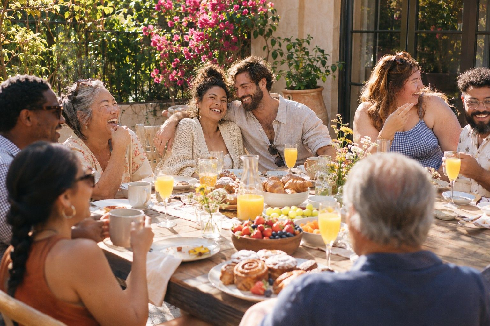
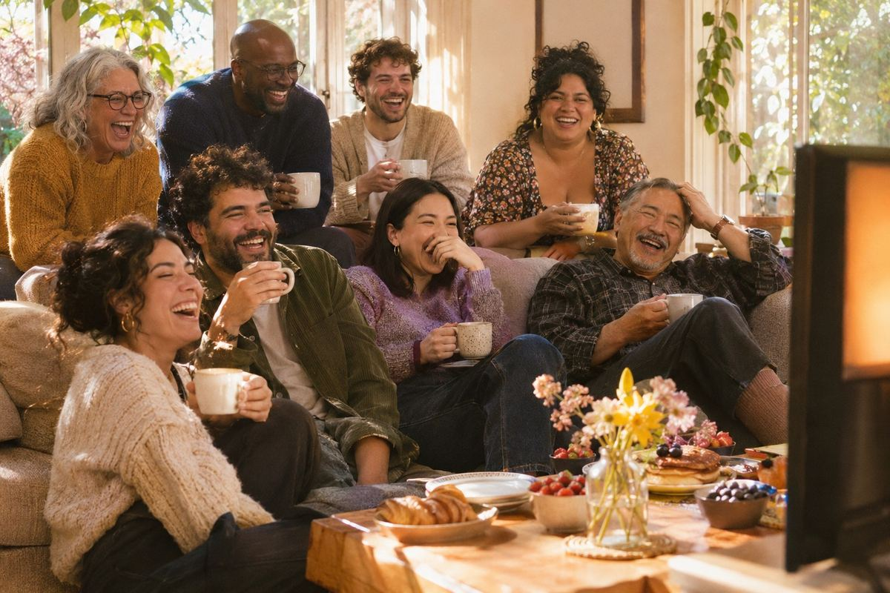
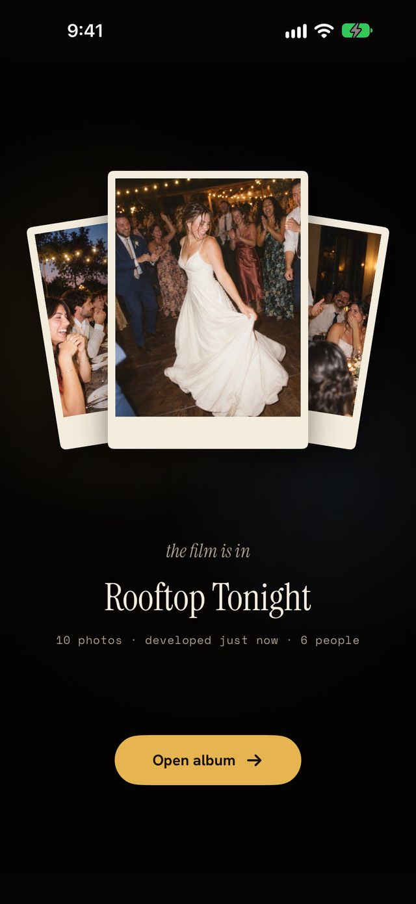

Post-Wedding Brunch Ideas: Planning, Menu and a Photo Reveal
Who hosts, what to serve, what to say on the invite, and a better way to end the weekend.

Short answer: The best post-wedding brunch ideas keep it easy: a relaxed, come-and-go meal the morning after, in a two-hour window starting around 10 a.m., hosted and paid for by the couple or a parent. Serve eggs, pastries, fruit, coffee and something sparkling, and plan one gentle activity, like opening the night’s photos together.
This guide covers the questions every host asks: who hosts and pays, who to invite, when to start, where to hold it and what to serve at three budgets. You’ll also get invitation wording you can copy, a two-hour run of show, and the one idea that turns a nice breakfast into the finale of the whole weekend.
Who hosts the post-wedding brunch, and who pays?
There’s no fixed rule. A parent or close relative is the traditional host, but couples can just as well host it themselves or split it with family. The simple principle: whoever sends the invitation covers the bill.
- The couple. The most control over guest list and menu, and one more line in the budget.
- A parent or relative. A meaningful way for family to contribute. Agree on the guest list and venue together so nobody is surprised.
- The wedding party or friends. Works for a casual potluck at a rental house.
- No host at all. “We’ll be at the café from 10 to noon, come say goodbye” is fine, as long as the invitation says plainly that guests order and pay for themselves.
Extra events like this are common. In Zola’s 2026 First Look Report, a survey of more than 11,500 couples marrying in 2026, 37% said they’re hosting at least one additional event, like a welcome party or a day-after brunch. It’s optional, though. If the budget is spent, a coffee-and-pastry send-off in the hotel lobby does the same job for a fraction of the cost.
Who should you invite to the day-after brunch?
The etiquette answer is generous. The Emily Post Institute says the brunch usually goes to everyone who was invited to the wedding, and that if you invite only a select group, you should be discreet when extending invitations.
In practice, many hosts keep it to family, the wedding party and out-of-town guests, especially when the venue is small. If you do, invite by separate card, email or text before the wedding, and don’t announce it from the microphone at the reception. Ask for RSVPs either way, since brunch attendance is hard to guess and food is ordered by the head.
When and where to hold it
Aim for late enough that everyone gets some sleep and early enough to beat hotel checkout and afternoon flights. A two-hour, come-and-go window starting around 10 a.m. suits most weekends. Nudge it earlier if a lot of guests fly out before noon, or later if the after-party ran past 1 a.m.
Tell guests it’s drop-in, so nobody feels rude leaving at 10:45 to catch a flight. The couple should plan to be there for most of it; it may be the only real conversation some guests get with you all weekend.
| Venue | Best for | Watch out for |
|---|---|---|
| Hotel restaurant or breakfast room | Out-of-town guests in your room block | Ask for a private area and whether there’s a TV you can use |
| A restaurant’s private room | Mid-size groups who want zero cleanup | Food-and-drink minimums; a set menu speeds things up |
| A family home or backyard | Tight budgets, kids, a relaxed feel | Someone has to set up while the couple sleeps in |
| The rental house the wedding party stayed in | Small groups and potlucks | Checkout times and limited seating |
| The wedding venue’s next-day package | Convenience, if it’s offered | Cost, and it can feel like the wedding again |
Post-wedding brunch menu ideas by budget
Brunch after a wedding has one job: feed tired people quickly. Mix sweet and savory, include something hearty (eggs, potatoes, breakfast tacos), label anything vegetarian or gluten-free, and put the coffee where guests see it first.
| Budget | What to serve | How to pull it off |
|---|---|---|
| Shoestring (DIY) | Bagels and spreads, an egg-and-sausage casserole, a yogurt parfait bar, a fruit platter, a coffee urn and orange juice | Family assembles the casserole the day before and bakes it in the morning; bakery bagels need no prep |
| Mid-range (drop-off catering) | Breakfast tacos or burritos, frittata trays, pastries from a local bakery, roasted potatoes, fruit, a coffee bar | Order drop-off trays from a café; one friend refills and keeps an eye on the clock |
| Full service | A restaurant’s set brunch or a hotel buffet with an omelet station, waffles and a drinks bar | Book a private room with a fixed menu and agree on the per-person price in writing |
Hangover-friendly drinks, honestly
Set up a water station first (still, sparkling and a jug with lemon or cucumber), then coffee, cold brew, tea and two juices. A mimosa or bloody mary bar is a nice touch, as long as there’s an equally good nonalcoholic option beside it, such as sparkling cider or a virgin mary.
Just don’t promise a cure. The National Institute on Alcohol Abuse and Alcoholism says there is no cure for a hangover other than time, and that coffee or another drink in the morning won’t cure one. It also warns that alcohol combined with acetaminophen can be toxic to the liver, so think twice before setting out a “hangover kit” next to the mimosas. Water, food and a shady seat are the kinder kit.
Keep the buffet safe for two hours
A come-and-go brunch means food sits out the whole time. The FDA’s buffet guidance says to keep hot food at 140°F or warmer and cold food at 40°F or colder, and to discard perishables left at room temperature for more than two hours, or one hour if the buffet is somewhere above 90°F. It also says to replace nearly empty serving dishes with freshly filled ones rather than adding new food to them. For an outdoor summer brunch, put cold dishes on ice and bring out food in two rounds.
Post-wedding brunch invitation wording you can copy
Put brunch details wherever guests already look: the wedding website’s events page, an insert card in the invitation, or a text for a smaller group. Fill in the brackets.
Wedding website or events page
Farewell Brunch · Sunday, [date] · 10 a.m. to noon · [Venue, address]. Drop by before you head home for coffee, breakfast and a first look at last night’s photos. Casual dress, kids welcome. Please RSVP by [date] so we can plan food.
Insert card (formal)
Please join us for a farewell brunch
Sunday, the [date], from ten o’clock until noon
[Venue, address]
Hosted by [names] · Kindly reply with your wedding RSVP
Text for a smaller group
Hi! We’re having a small brunch on Sunday at [place] from 10 to noon for family and out-of-town friends, and we’d love for you to come. No need to dress up. Can you let us know by [date]?
No-host version
We’ll be at [café] on Sunday from 10 to noon if you’d like to grab breakfast with us before you go. It’s pay-as-you-go and totally casual. Come for five minutes or two hours.
The morning-of reminder
Good morning! Brunch is on from 10 to noon at [place]. Come as you are; the coffee’s hot and the photos from last night open at 10:30.
Post-wedding brunch ideas for low-key activities
Nobody wants a schedule the morning after a wedding. One or two of these give the brunch a center without asking anything of tired guests:
- Open the night’s photos together. The best of the bunch, covered in the next section.
- Read the guest book or advice cards aloud. Pick the five funniest and the two kindest.
- Hand out the game prizes. Winners of the wedding photo scavenger hunt or the trivia round get their moment.
- Do a slow lap. The couple visits every table for the conversations the reception didn’t allow.
- Play a guest-made slideshow on a loop in the corner. These wedding slideshow ideas include one built from guests’ photos.
- Open cards or gifts, if that’s a tradition in your family. Keep it short and have someone note who gave what for thank-you cards.
- Send people off well. Coffee in to-go cups, a boxed pastry for the road, and the reception centerpieces in jars for anyone who wants flowers.
Make the brunch your photo reveal
Here’s the signature idea. During the reception, every guest shoots into one shared camera, and nobody can see a single photo until brunch. Then, with coffee in hand, everyone opens the photos at the same moment and sees the night from a hundred angles they missed. It gives the morning a reason to show up, and it gives the couple their first look at the wedding through their guests’ eyes.

How to set it up with Filmsera
Filmsera is a shared disposable camera app for iPhone built around exactly this kind of timed reveal. The setup, done the week before:
- Create a film for the reception and choose Custom for the reveal time; the Tonight, Tomorrow and In 3 days presets all develop at 9 p.m., long after brunch. Set it for about 30 minutes after brunch starts, so latecomers have arrived and everyone has a coffee.
- Print the QR code from the invite card on your table cards or welcome sign. Guests can also join with the invite link or an 8-character code.
- Let guests shoot all night. They join from any phone’s browser with no app or account, or in the free Filmsera app on iPhone, and every photo stays sealed. Nobody can peek, including you.
- Open it together at brunch. At the reveal time the whole film appears at once for everyone in it, each photo tagged with who took it, and a short vertical recap reel builds itself, set to music. On iPhone, a Live Activity counts down to the moment.

To show the recap on a TV, save it to Photos, then use AirPlay: Apple’s instructions are to join the same Wi-Fi network as the Apple TV or AirPlay-compatible smart TV, tap Share in Photos, tap AirPlay and choose the TV. Test it during setup, not at 10:30.
Be realistic about what you’ll get. The recap is a vertical reel of about 10 to 30 seconds, so on a widescreen TV it plays with bars on the sides; play it twice, then let people scroll the album on their phones. For a long sit-down slideshow, use a desktop slideshow tool instead. Browser guests shoot photos only, and the host needs an iPhone. As of November 2026, a free film covers up to 10 guests and exports the recap at 480p with a Filmsera watermark; bigger weddings use a one-time pass for that film, which adds an HD recap with no watermark and keeps the photos for a year (free films keep them for 30 days after the reveal). See Filmsera for weddings for the details.
Filmsera keeps every guest’s reception photos sealed until the brunch time you pick, then opens the whole roll for everyone at once. Get Filmsera on the App Store
Not sure brunch is the right moment? Here’s how to think about choosing the right reveal time for any event.
A two-hour post-wedding brunch run of show
This assumes a 10 a.m. start and a photo reveal at 10:30. Give a copy to whoever is hosting so the couple can sleep until 9.
| Time | What happens | Who’s on it |
|---|---|---|
| 9:15 a.m. | Food set up, coffee on, TV and AirPlay tested, Wi-Fi name on a card by the door | Host or a helper, not the couple |
| 10:00 a.m. | Doors open: drinks first, then food | Host |
| 10:15 a.m. | Couple arrives and greets each table | Couple |
| 10:30 a.m. | Photo reveal: everyone opens the film; recap plays on the TV twice | Couple, plus a friend on the TV |
| 10:45 a.m. | Eat, scroll photos, swap phones and stories | Everyone |
| 11:15 a.m. | Two-minute thank-you from the couple; game prizes handed out | Couple |
| 11:30 a.m. | Goodbyes for travelers; to-go coffee and pastry boxes | Host |
| Noon | Wrap up; leftovers packed; centerpieces go home with guests | Host and helpers |
One last tip: after brunch, send a short thank-you text with a link to the photos, and ask anyone who shot on their own camera to add theirs. Our guide on how to ask wedding guests to share photos has wording for that message.
FAQ
Who pays for the post-wedding brunch?
Whoever hosts it pays. That’s often the couple or a parent, sometimes a relative or close friends, and some families split the cost. If nobody is hosting, you can still suggest a casual meetup at a café, as long as the invitation says clearly that guests order and pay for themselves, so nobody is caught off guard by the bill.
Do you have to invite all wedding guests to the brunch?
No, but it’s the generous default. The Emily Post Institute says the brunch usually goes to everyone invited to the wedding, and that a smaller guest list calls for discreet invitations. Many hosts limit it to family, the wedding party and out-of-town guests; if you do, invite them privately before the wedding rather than announcing it at the reception.
What time should a post-wedding brunch start?
Around 10 a.m. suits most weekends, with a two-hour come-and-go window so guests can leave for flights or hotel checkout without feeling rude. Start earlier if many guests fly out in the morning, or later if the after-party ran very late. Put the window, not just a start time, on the invitation.
What should you serve at a post-wedding brunch?
Keep it simple and filling: eggs or a breakfast casserole, potatoes or breakfast tacos, pastries, fruit and yogurt, plus plenty of water, coffee and juice. A mimosa or bloody mary bar is optional; offer a nonalcoholic option beside it. Food that sits out should follow the FDA’s two-hour rule, or one hour above 90°F.
Do guests bring a gift to the post-wedding brunch?
No gift is expected. The brunch is part of the wedding weekend, and the wedding gift covers the whole celebration. Guests just need to show up, eat and say goodbye. If the invitation says the brunch is no-host, the only thing guests should bring is a way to pay for their own meal.
Written by the Filmsera team
Filmsera is a shared disposable camera app for iPhone: create a film for your event, let guests join by QR code from the app or their phone's browser, and open the whole roll together at the reveal. Download on the App Store →
Photos in this article are illustrations created for Filmsera, not customer photos. App screenshots are from Filmsera on iPhone.